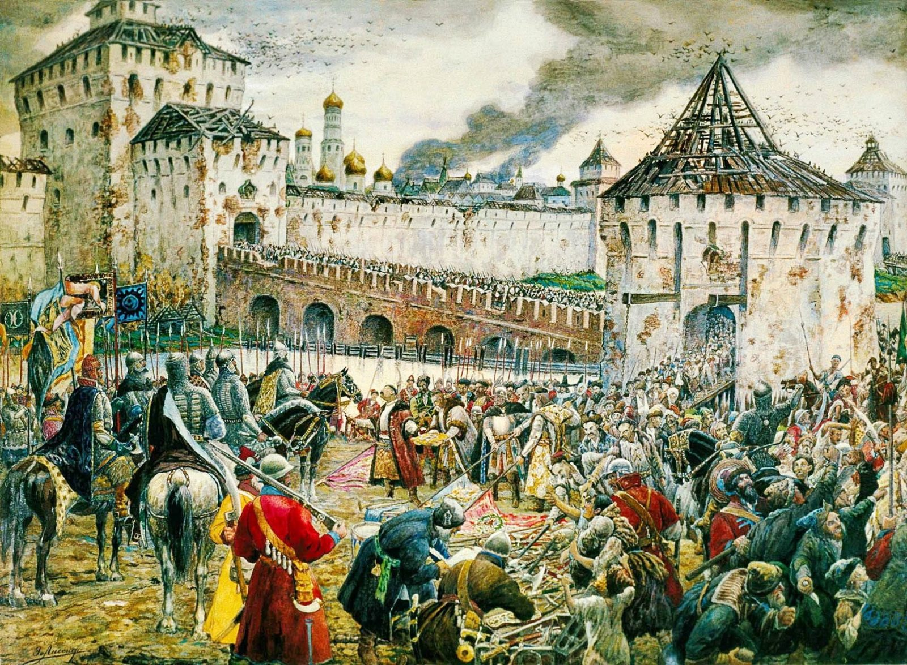
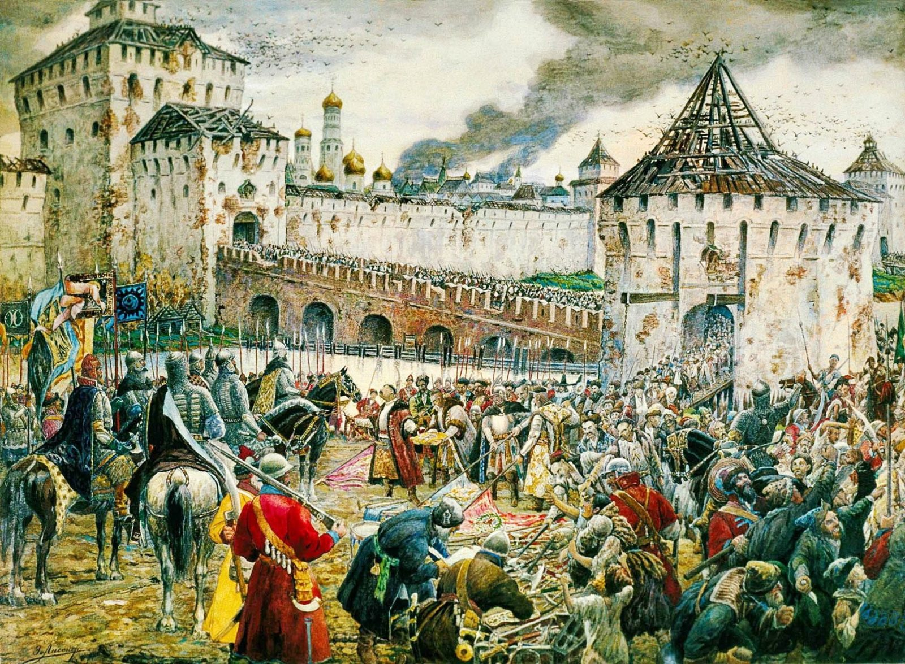

Семибоярщина и приход чужой власти не устраивало богатый город, поэтому нижегородцы выступили инициаторами освободительного патриотического движения. После того, как Лжедмитрий I был убит и московский престол занял Василий Шуйский, по уездам стали распространяться слухи о втором, якобы настоящем, царевиче Дмитрии. Как следствие, в 1606 году в землях нижегородского уезда стали появляться большие разбойничьи шайки. Они называли себя «вольница», жгли деревни и грабили всех жителей. Не в силах самостоятельно бороться с мятежниками нижегородцы отправили гонца к царю с просьбой о помощи.
В октябре 1611 г. Кузьма Минин произнёс краткую речь, в которой призвал нижегородцев
к спасению отечества. Он предложил всем отдать добровольно третью часть своих сбережений
на формирование народного войска. Добровольных пожертвований было мало, и тогда решили уже
принудительно собрать с каждого нижегородца пятую часть всех его доходов. Эти средства должны
были пойти на выплату жалования будущим ополченцам, приобретение оружия и продовольствия.
Собранных средств хватило на то, чтобы платить ополченцам огромное жалование. Люди опытные в
военном деле получали больше, те, кто ни разу не воевал – меньше, но разделения на крестьян и дворян не было.
В качестве командиров Минин пригласил смоленских воевод, которые после сдачи города отказались служить польской
власти, а бросив поместья, обосновались в Арзамасском уезде.
Очень важный вопрос, который стоял перед Мининым и нижегородцами, участниками ополчения, был связан с выбором
командующего войском. Нижегородскому ополчению требовался опытный военный руководитель.

Первый был не слишком грамотен в ратном деле и имел связи с поляками, поэтому доверия нижегородцев ему не было. Алябьев хорошо сражался с шайками мятежников и освобождал уездные нижегородские города, но был известен лишь в своём уезде. Чтобы брать Москву, нужен был очень авторитетный полководец и Кузьма Минин предложил призвать главным полководцем князя Дмитрия Пожарского.

К февралю 1612 подготовка к походу на Москву была практически закончена. В народное ополчение Минина и Пожарского входило более 5000 воинов. Войско было разбито на отряды под руководством опытных воевод. Те, кто никогда не сражался, получили необходимое образование. Руководители поняли, что ждать больше нельзя и нужно выступать.
Время для свержения поляков было выбрано удачным. В Москве свирепствовал голод, из-за которого большая часть польского войска ушла из города и рассредоточилась по уездам в поисках продовольствия. В Кремле и Китай-городе осталось не более 4000 солдат. Князь Пожарский планировал разбить поляков по частям. Сначала нужно было дать сражение отрядам под предводительством Ходкевича, а затем войти в столицу и выбить захватчиков из Кремля. Воевода так же рассчитывал на помощь остатков первого ополчения, которые стояли недалеко от Москвы. Как только стало известно, что казаки захватили Ярославль, Пожарский направляет туда два сильных отряда под руководством своих родственников. Нижегородцы быстро взяли Ярославль и отправили депешу Пожарскому. В начале марта нижегородское ополчение выступает по новому маршруту на Ярославль. В апреле войско прибыло на место и оставалось в Ярославле до конца июля 1612 г. В Ярославле Минин, Пожарский и представители знатных княжеских фамилий занимались государственными делами. Город по факту стал политическим центром. Было сформировано будущее правительство под руководством Минина и Пожарского. В его состав входили:
Было принято решение о формировании второго земского собора, который должен был заниматься делами по замирению
враждующих городов и уездов. Одновременно Пожарский проводит важные переговоры с послом императора Германии и
договаривается о некоторых совместных действиях. Чтобы нейтрализовать Швецию, с её представителями были начаты
переговоры о возможном занятии русского престола братом Шведского короля.
За четыре месяца нахождения в Ярославле к ополчению присоединилось множество добровольцев, и его численность
достигла 10000 человек. Работали суды и приказы, отряды ополченцев активно ликвидировали разбойничьи шайки.
В июле 1612 г. на помощь 4-тысячному польскому гарнизону в Москве из Литвы выступил гетман Ходкевич. Он вел 15
тыс. воинов, преимущественно кавалеристов, и продовольственный обоз. Ходкевич был прославленный полководец,
стяжавший себе славу победами над шведами в Ливонии.
Пожарский и Минин понимали, что они должны подойти к Москве раньше Ходкевича. Ополченцы устремились к столице.
24 июля 1612 г. к Москве вышли передовые разъезды Второго ополчения. 3 августа отряд в 400 всадников построил у
Петровских ворот столицы острожек и засел в нем. 12 августа 700 конников укрепились у Тверских ворот Земляного
города (так называлась внешняя линия бревенчатых укреплений на валу и посад, примыкавший к ней). Ополченцы
перехватывали гонцов, которых посылал к Ходкевичу польский гарнизон, находившийся в Московском Кремле. В ночь с
19 на 20 августа к Москве подошли главные силы Второго ополчения - примерно 15 тыс. человек. Они остановились на
востоке от Кремля - у впадения Яузы в Москву-реку, и на западе и севере - от Никитских ворот Земляного города до
Алексеевской башни у Москвы-реки. В Замоскворечье продолжали стоять остатки Первого ополчения - около 3-4 тыс.
казаков Дмитрия Трубецкого.
Ходкевич наступал по Смоленской дороге. Утром 22 августа 1612 г. он появился у Москвы. Крылатые гусары с хода
пытались пробиться в столицу со стороны Новодевичьего монастыря, но были отброшены ополченцами Пожарского. Тогда
гетман ввел в бой все свои полки. Через Чертопольские ворота поляки пробились к Арбату. К вечеру дворянские
сотни Второго ополчения заставили их покинуть город. На следующий день, 23 августа, Ходкевич решил нанести удар
по Замоскворечью, надеясь, что натянутые отношения Пожарского и Трубецкого не позволят русским действовать
сообща. Но как только поляки двинулись на казаков Трубецкого, Пожарский переправил в Замоскворечье часть
ополченцев.
Решающее сражение произошло 24 августа. Ходкевич атаковал и Пожарского, и Трубецкого, польский гарнизон из
Кремля ударил русским в тыл. Ополченцы откатились за броды на Москве-реке, а казаки Трубецкого, бросив свой
острожек в Замоскворечье, ускакали к Новодевичьему монастырю. В острожек поляки стали заводить продовольственные
подводы.
В этот напряженный момент Авраамий Палицын явился к казакам и стал их убеждать не бросать поле битвы.
Вдохновленные им казаки, не дожидаясь команды Трубецкого, напали на острожек, захватили его и большую часть
польского обоза.
Приближалась ночь. Исход боя оставался неясен. Вдруг Кузьма Минин решился сам возглавить атаку. Перейдя реку, он
с тремя сотнями конных дворян ударил во фланг полякам, которые совершенно не ожидали этого. Польские ряды
смешались. Пожарский бросил в бой стрельцов. И со всех сторон на помощь неслись казаки Трубецкого.
В ходе борьбы с Ходкевичем произошло стихийное объединение сил Второго ополчения с казаками Трубецкого. Это
решило исход борьбы. Ходкевич отступил к Донскому монастырю, а 25 августа, не возобновляя сражения, вышел на
Смоленскую дорогу и пошел в Литву.
Попавший в осаду польский гарнизон в Кремле и Китай-городе начал голодать. Силы Второго ополчения подготовили и
успешно провели штурм китайгородских укреплений и освободили Китай-город от сил поляков 3 ноября 1612 года.
Однако отряд Струся оставался в Кремле, несмотря на голод. 5 ноября, на следующий день после почитания иконы
Казанской Божьей Матери поляки, засевшие в Кремле сдались на милость Второго ополчения. Из трехтысячного
гарнизона Кремля не выжил не один поляк, кроме их командира Н. Струся.
Освобождение Москвы от польских интервентов силами Второго Ополчения стало символом духовной стойкости и
воинской славы русского народа. Самоотверженность, с которой вся Россия поднялась на борьбу с врагами Отечества,
продемонстрировала всему миру силу русского духа и русского единства.
Не зная о капитуляции своих войск в Москве, шел к Москве Сигизмунд III, но под Волоколамском он был разбит
русскими полками.
 
